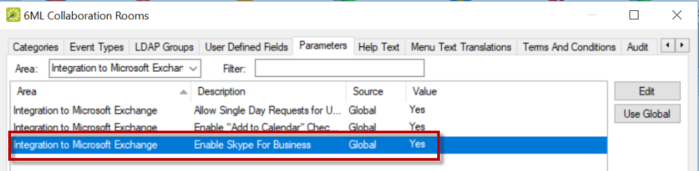

Configure Skype for Business
This topic provides information on the following:
-
Deployment Types
-
Integrate with Skype for Business Server
-
Connect EMS Web App to Platform Services
-
Configure Skype for Business on Global Templates
-
Configure Skype for Business on a Process Template Level
-
Configure Skype for Business on Existing Templates
Skype for Business must be configured in the EMS Desktop Client. The process below applies to both EMS Mobile App and EMS Web App.
Deployment Types
There are three deployment types for Skype for Business:
- On Premise: This deployment for Skype for Business does not retain a token and requires authentication every 8 hours. As a result, you will be asked to sign in every 8 hours.
- Online: This deployment retains the token so only an initial authentication is required.
- Hybrid: This deployment has the same authentication method as the Online deployment.
Skype for Business Authentication and Authorization Sequence Diagram

Note: Ensure that you have Exchange web services component deployed in your environment.
Integrate with Skype for Business Server
- Set the authentication for Skype for Business.
- Navigate to System Administration > Settings > Parameters > Everyday User Applications tab.
- From the Area dropdown, choose Skype for Business.

- For On Premise deployment:
- Set the Skype for Business Auto Discover URL parameter. This parameter performs autodiscovery to find the appropriate server to communicate with. For more information regarding setting this parameter, click see here.
- Set the Skype for Business Serve Authentication Method. This parameter determines the authentication type that is used to generate a token.
- The Skype for Business (On Premise) server supports three authentication methods:
- ADFS (not supported in EMS Mobile App)
- NTLM
- UserName/Password

- For Online deployment:
- Set the Azure Active Directory Client ID parameter. This parameter determines the ID of the registered application. For more information regarding setting this parameter, click see here.
- Set the Azure Active Directory Tenant parameter. This parameter determines the name of the AAD tenant. For more information regarding setting this parameter, click see here.
- Skype for Business Auto Discover URL. This parameter performs autodiscovery to find the appropriate server to communicate with. For more information regarding setting this parameter, click see here.
- Skype for Business Server Authentication Method. This parameter determines the authentication type that is used to generate a token.
- The Skype for Business (Online) server supports one authentication method:
- Oauth
- Configure the Reply URL for EMS Mobile App (Skype for Business Online deployment):
- Refer to the steps outlined in this see documentation.
- In the Reply URL field, insert emssoftware://skype/x.
- Configure the Reply URL for EMS Web App:
- In the Reply URL field, insert the root URL:
- Skype for Business Reply URL = https://loripsor/ConferencingLogin.aspx (where EMS Web App URL = htttps://loripsor.emswebapp.com and Root URL = loripsor)
Warning: The cache must be cleared in Platform Services and the EMS Web App whenever parameter changes are made in the EMS Desktop Client.
Connect EMS Web App to Platform Services
In order to integrate with Skype for Business, EMS Web App must connect to EMS Platform Services.
- Navigate to the EMS Platform Services Admin Portal.
- Select Integrations. Under Clients, click on the EMS Web App link.
- Click the Reset Secret button and copy the generated Secret.
- In the web.config file located in the designated folder for your current version of EMS, insert the copied Secret ID into the value field.
<add key="platformServicesSecret" value="YourSecretID" />
Important: Cloud customers do not need to generate a Secret or insert it into the web.config file (Steps 3 through 4).
- Clear the cache in EMS Platform Services by navigating back to the EMS Platform Services Admin Portal and clicking the Clear Cache button.
Configure Skype for Business on Global Templates
- Log into EMS Desktop Client. Enable the global parameters for Skype for Business within EMS. Navigate to System Administration > Settings > Parameters > Everyday User Applications tab.
- From the Area dropdown, choose Integration to Microsoft Exchange.
- Select Enable Skype for Business. Click Edit.
- The default value is No. Set the Description to Yes.
- Click OK.
- Click Close.
Configuring Skype for Business on a Global Template

- Navigate to System Administration > Settings > Parameters > Everyday User Applications tab.
- From the Area dropdown, choose System.
- Select Platform Services URL. Click Edit.
- Enter the Value (enter the URL for Platform Services) (e.g., https://serverURL/{PlatformServicesName}.
- Click OK.
- Click Close.
- Navigate to System Administration > Settings > Parameters > Everyday User Applications.
- From the Area dropdown, choose Skype for Business.
- Select Enable Skype for Business. Click Edit.
- The default value is No. Set the Description to Yes.
- Click OK.
- Click Close.
Configure Skype for Business on a Process Template Level
Note: Changing the parameters on a template level will override the global settings.
To configure Skype for Business on a process template level:
- Navigate to Configuration > Everyday User Applications > Everyday User Process Templates.
- Click New.
- In the Everyday User Application Settings, check the Enable Integration to Microsoft Exchange box.
- Navigate to the Parameters tab.
- Filter the parameters by typing "Skype" in the Filter field.
- Click on the Enable Skype for Business parameter and click Edit. The Edit Parameter dialog box appears.
- The default value is No. Select Yes from the Enable Skype for Business dropdown. Click OK on the Edit Parameter dialog box.
- Click OK on the Everyday User Process Template box.
- Click Close.
Configuring Skype for Business on a Process Template Level

Warning: The cache must be cleared in Platform Services and the EMS Web App whenever parameter changes are made in the EMS Desktop Client.
Configure Skype for Business on Existing Templates
To configure Skype for Business in existing templates:
- In the EMS Desktop Client, navigate to Configuration > Everyday User Applications > Everyday User Process Templates.
- Click on the existing template for which you want to enable Skype for Business.
- Click Edit. The template dialog box appears.
- Ensure that the Enable Integration to Microsoft Exchange box is checked in the Everyday User Application Setting section.
- Navigate to the Parameters tab.
- Filter the parameters by typing "Skype" in the Filter field.
- Click on the Enable Skype for Business parameter and click Edit. The Edit Parameter dialog box appears.
- The default value is No. Select Yes from the Enable Skype for Business dropdown.
- Click OK on the Edit Parameter dialog box.
- Click OK on the Everyday User Process Template box.
- Click Close.
Configuring Skype for Business in an Existing Template

Warning: The cache must be cleared in Platform Services and the EMS Web App whenever parameter changes are made in the EMS Desktop Client.
Note: Once a Skype meeting is added to a reservation, a Skype meeting flag—indicating that the reservation has a Skype meeting—appears in the Booking Summary tab for the reservation in the EMS Desktop Client. Additionally, the Skype ID will appear in the Properties tab for the reservation. A reservation-level display field named Skype Meeting in the Query Builder will indicate there is a Skype meeting in the reservation.